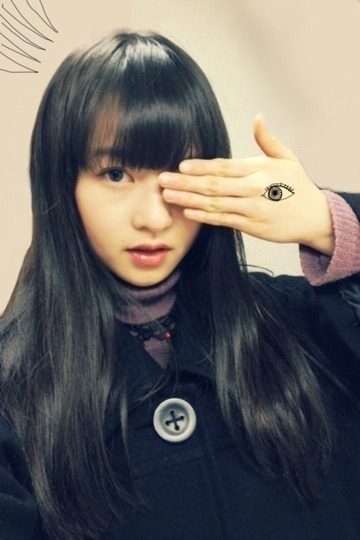
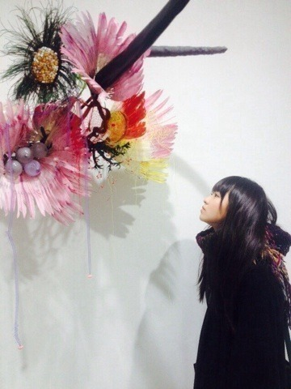

| 2014/01 11 Sat | 左目の行方。536回目 |

ついに
NOGIBINGO!2
が始まりました！
前回より、乃木坂46の良さが
伝わればいいなあ。
MCがイジリーさんで嬉しいです。
自然体に楽しめるように
頑張ります！
昨日は展覧会に行った。

リナ・バネルジー
私は何でできていて、
あなたはどうやって私の名前を知るの？
興味深いタイトル...
繊細で物憂げ
触れたい、
触れたら壊れてしまいそう。
あなたは何でできているの。
心地の良いため息が出ます。
そして、その後は
クリープハイプさんの映画
自分の事ばかりで情けなくなるよ
を観に行きました。
行きたくても予定が合わなくて
結局終わってしまったのだけど、
再再上映で
観ることができました。
最近、休日は映画を借りて
たくさん観るようにしています。
コメントでたまに
映画だったり本だったり
音楽だったり美術館だったり
お店だったり食べ物だったり
教えてくださる方がいて嬉しい〜
ちゃっかりメモしています。
これからも
まりか好きそうだなー
とか
好きだろうなー
とか
みなさんが好きなもの
とか教えてください！
それを見たら
私はこんなイメージなんだなー
っていうのわかるっ

きょんきょーーーーーーん
これ、結構前の写真だ笑
では、明日お仕事頑張ってきます。
まりか
コメント(479)
2014/01/11 21:12